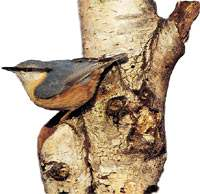

Forum Natuurfotografie: Hier kan je terecht met al je vragen over natuurfotografie (en fotografie in het algemeen). Dit forum krijgt de volle ondersteuning van een aantal echte pro's, dus je bent in goede handen. Forum Natuurfotografie: Hier kan je terecht met al je vragen over natuurfotografie (en fotografie in het algemeen). Dit forum krijgt de volle ondersteuning van een aantal echte pro's, dus je bent in goede handen.
Hiking-infoVoor de avontuurlijke wandelaars en trekkers in de wilde natuur.
Rollin Verlinde's Natuurfotografie: Mooie site die zonder een blad voor de mond te houden een aantal tippen van de sluier oplicht over het boeiende wereldje van natuurfotografen. Naast enkele grappige anekdotes vind je ook tal van tips en trucs voor de (semi-)professionele fotograaf. Het portfolio van deze kerel is echt indrukwekkend! Zondermeer een bezoekje waard.
Op Vogelkijkhut.nl kunt u per provincie zoeken naar een vogelkijkhut (of een andere relevante vogelkijkplek). Hierbij staat een routebeschrijving naar de betreffende hut, een locatiekaart, de gps-positie, diverse foto's en, last but not least, de meest recente waarnemingen vanuit de hut (helaas enkel Nederland).
Libellen - Odonata: Deze prachtige site, die oorspronkelijk werd uitgewerkt als studentenproject, is zowat de tegenhanger van natuurbeleving, maar dan over libellen. Je vindt er meer informatie over deze prachtige dieren, hun levenswijze en voorkomen, geïllustreerd met foto's en tekeningen.
Vereniging voor Zoogdierkunde en Zoogdierbescherming (VZZ): Heel interessante site voor wie actief met onze inheemse zoogdieren bezig is. Je vindt er lopende projecten in Nederland, verspreidingskaartjes en erg uitgebreide beschrijvingen van een aantal soorten. VZZ heeft ook een aparte pagina gemaakt voor onze inheemse vleermuizen.
Walvisstrandingen.nl: Compleet overzicht van alle meldingen van aangespoelde zeezoogdieren in Nederland. Regelmatige updates, vaak met foto's.
Roofvogels van Sleenerzand: Wie meer informatie wil over onze roofvogels vindt hier alles wat hij wil: foto's, anatomie, jachttechnieken, informatie over de roofvogeltrek, vervolging en nog heel wat meer. Een pracht van een site!
Digiscoping: Neem een kijkje naar ons overzicht van interessante links over de opwindende nieuwe manier van fotograferen: met een digitale camera en een telescoop. Beter bekend onder de term 'digiscoping'.
Optics for birding: Van plan een nieuwe verrekijker aan te schaffen? Een telescoop misschien? Bezoek dan beslist deze site! De ietwat saaie lay-out verbergt een schat aan informatie over alle aspecten van kijkers en een hoop veel gestelde vragen van twijfelende kopers.
Better View Desired: Engelse site met veel testen van verrekijkers, telescopen en statieven. Ook de laatste modellen komen aan bod en worden vergeleken met de 'standaarden'.
Natuurpunt België: dé nieuwe vereniging die opkomt voor de natuur in Vlaanderen. Ontstaan uit de fusie tussen Natuurreservaten vzw en De Wielewaal vzw is Natuurpunt met 50.000 aangesloten gezinnen, duizenden vrijwillige medewerkers en bijna 11.000 hectaren natuurgebied in beheer, meteen ook de belangrijkste vereniging voor natuurbehoud en landschapszorg in Vlaanderen.

Vogelbescherming Vlaanderen: Het doel van Vogelbescherming België is speciaal toegespitst op de daadwerkelijke bescherming van de vogels. Zij treedt op als advocaat van de wilde avifauna. In het Nederlandstalige landsgedeelte is de vereniging beter gekend onder de benaming Vogelbescherming Vlaanderen.
Staatsbosbeheer Nederland: Staatsbosbeheer is de beheerder van het nationale natuurlijke erfgoed. De 1000 natuurgebieden vormen samen maar liefst 5% van de totale oppervlakte van het land. Jaarlijks worden er 100 miljoen bezoekers ontvangen.
Vogelbescherming Nederland: . Omdat het voorkomen van vogelsoorten direct samenhangt met de leefomgeving, is Vogelbescherming Nederland zich in toenemende mate gaan richten op de (veranderde) omstandigheden in de leefgebieden. Daarmee is ze niet alleen een vereniging voor de bescherming van vogels, maar ook voor natuurbescherming.
Jeugdbond voor Natuurstudie en Milieubescherming (BE)/(NL): De JNM is een landelijk georganiseerde vereniging voor en door jongeren tussen 8 en 25 jaar. De vereniging bestaat zowel in Nederland als België. Doelstellingen zijn het kennismaken met alles wat leeft en bloeit, alsook werken aan een natuur- en mensvriendelijke omgeving. Dit gebeurt door middel van talrijke afdelingen, werkgroepen, excursies, kampen, voordrachten, studies, acties, tijdschriften, infocentrum ...
Natuurmonumenten: De grootste particuliere natuurbeschermingsorganisatie in Nederland die op meerdere plekken samenwerkt met Belgische organisaties en zelfs kleine stukjes in België in bezit heeft. Een geheel vernieuwde site waar ook veel excursies op staan en waar veel plattegronden van natuurterreinen te vinden zijn.
Natuurkalender: Op deze pagina's kun je informatie vinden over De Natuurkalender, een fenologische waarnemingsnetwerk waar iedereen in Nederland aan mee kan doen. De Natuurkalender is een nationaal educatief/wetenschappelijk waarnemingsprogramma dat zich richt op het in kaart brengen van de effecten van klimaatverandering op de jaarlijks terugkerende verschijnselen in de natuur.
vogelaar.pagina.nl: Alweer een dochterpagina van pagina.nl, maar dan wel een hele goede. Je krijgt een hoop links, mooi gesorteerd per categorie over alles wat met vogels en vogelobservaties te maken heeft. De site wordt regelmatig geüpdated en websitebouwers kunnen er hun eigen pagina aan toevoegen!
Vertalingen van vogelnamen: Deze site vertaalt een eender welke soortennaam in het Engels, Latijn, Russisch ... Een vertalingsrobot dus, speciaal voor vogelnamen.
Vogels van Groningen en Drenthe: Op deze site staan waarnemingen van verschillende plaatsen in Groningen en Drenthe.
Yahoo Birding Site: Een pagina van de bekende index speciaal gewijd aan alles wat met vogels te maken heeft. Wil je de internationale toer op, dan moet je dus hier terecht.
ontrack.nl: Op deze pagina vind je interessante informatie over fiets- en wandeltochten in de Nederlandse natuur. Je kan je abonneren op hun nieuwsbrief.
De tuingids: Deze site vormt een echte tuinencyclopie. De verschillende rubrieken worden samengesteld door vakmensen. Je vindt er natuurlijk alles over tuinieren maar ook informatie over de verschillende bloemen en planten.
|